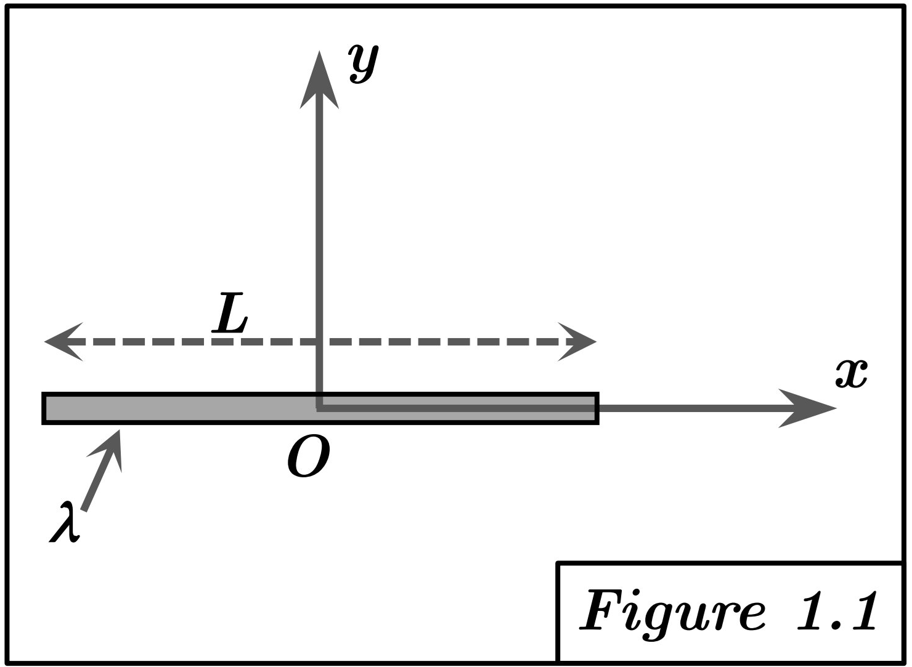

Solution Figure 1.1 : Tige centrée en O sur l'axe OX

FIGURE 1 - Tige centrée en O sur l'axe OX
Méthode requise : Calcul direct.
Concepts Clés :
- Matrice d'inertie : C'est une matrice symétrique $[I_O]$ qui décrit comment la masse d'un solide est distribuée par rapport à un point O et comment elle résiste à la rotation autour des axes passant par ce point. Elle dépend du point O et de la base choisie.
- Composantes : La matrice d'inertie dans une base $(O, \vec{i}, \vec{j}, \vec{k})$ est donnée par :
$$ [I_O] = \begin{pmatrix} A & -D & -E \\ -D & B & -F \\ -E & -F & C \end{pmatrix} $$
où A, B, C sont les moments d'inertie par rapport aux axes Ox, Oy, Oz et D, E, F sont les produits d'inertie par rapport aux plans. Ils sont définis par les intégrales sur le volume (ou la surface, ou la ligne) du solide (S) :
$$ A = I_{xx} = \int_{(S)} (y^2 + z^2) dm \quad (\text{Moment d'inertie / Ox}) $$
$$ B = I_{yy} = \int_{(S)} (x^2 + z^2) dm \quad (\text{Moment d'inertie / Oy}) $$
$$ C = I_{zz} = \int_{(S)} (x^2 + y^2) dm \quad (\text{Moment d'inertie / Oz}) $$
$$ D = I_{xy} = \int_{(S)} xy dm \quad (\text{Produit d'inertie / plan z=0}) $$
$$ E = I_{xz} = \int_{(S)} xz dm \quad (\text{Produit d'inertie / plan y=0}) $$
$$ F = I_{yz} = \int_{(S)} yz dm \quad (\text{Produit d'inertie / plan x=0}) $$
- Note : La convention de signe $(-D, -E, -F)$ est courante en mécanique.
- Corps linéique : Modélisation où la masse est répartie le long d'une courbe (1D). L'élément de masse $dm$ est lié à l'élément de longueur $dl$ par la densité linéique $\lambda$ : $dm = \lambda dl$.
- Symétrie : La symétrie matérielle simplifie le calcul. Si un plan de coordonnées (ex : $z = 0$) est un plan de symétrie matérielle, les produits d'inertie impliquant la coordonnée perpendiculaire (ici $E = I_{xz}$ et $F = I_{yz}$) sont nuls. Si un axe de coordonnées est un axe de symétrie, les trois produits d'inertie sont nuls. Ici, la tige est sur l'axe OX. Cela implique une symétrie de révolution autour de OX (pour une tige infiniment fine) mais surtout que $y = 0$ et $z = 0$ pour tous les points de la tige.
Géométrie et Paramétrisation :
- Segment de droite sur l'axe OX, de $x = -L/2$ à $x = +L/2$.
- Un point P du segment a pour coordonnées :
$$ P = \begin{pmatrix} x \\ 0 \\ 0 \end{pmatrix}, \quad \text{avec } x \in \left[-\frac{L}{2}, \frac{L}{2}\right] $$
- Élément de longueur : $dl = dx$.
- Élément de masse (densité $\lambda$ constante supposée) : $dm = \lambda dx$.
- Masse totale :
$$ M = \int_{-L/2}^{L/2} \lambda dx = \lambda [x]_{-L/2}^{L/2} = \lambda \left(\frac{L}{2} - \left(-\frac{L}{2}\right)\right) = \lambda L $$
Calcul des termes du tenseur :
Pour tout point P de la tige, $y = 0$ and $z = 0$.
Calcul de A :
$$ A = \int_{-L/2}^{L/2} (y^2 + z^2) dm = \int_{-L/2}^{L/2} (0^2 + 0^2) \lambda dx = 0 $$
Calcul de B :
$$ B = \int_{-L/2}^{L/2} (x^2 + z^2) dm = \int_{-L/2}^{L/2} (x^2 + 0^2) \lambda dx $$
$$ = \lambda \int_{-L/2}^{L/2} x^2 dx = \lambda \left[\frac{x^3}{3}\right]_{-L/2}^{L/2} $$
$$ = \lambda \left( \frac{(L/2)^3}{3} - \frac{(-L/2)^3}{3} \right) = \lambda \left( \frac{L^3}{24} - \left(-\frac{L^3}{24}\right) \right) $$
$$ = \lambda \left( \frac{L^3}{24} + \frac{L^3}{24} \right) = \lambda \frac{L^3}{12} $$
En fonction de $M = \lambda L$ :
$$ B = \frac{(\lambda L) L^2}{12} = \frac{ML^2}{12} $$
Calcul de C :
$$ C = \int_{-L/2}^{L/2} (x^2 + y^2) dm = \int_{-L/2}^{L/2} (x^2 + 0^2) \lambda dx = B = \frac{ML^2}{12} $$
Calcul de D :
$$ D = \int_{-L/2}^{L/2} xy dm = \int_{-L/2}^{L/2} x(0) \lambda dx = 0 $$
Calcul de E :
$$ E = \int_{-L/2}^{L/2} xz dm = \int_{-L/2}^{L/2} x(0) \lambda dx = 0 $$
Calcul de F :
$$ F = \int_{-L/2}^{L/2} yz dm = \int_{-L/2}^{L/2} (0)(0) \lambda dx = 0 $$
Résultat :
Le tenseur d'inertie au point O est :
$$ [I_O]_{1.1} = \begin{pmatrix} 0 & 0 & 0 \\ 0 & ML^2/12 & 0 \\ 0 & 0 & ML^2/12 \end{pmatrix} $$
Commentaire :
Les axes OY et OZ sont équivalents par symétrie de révolution autour de OX pour une tige idéalement fine. Ici, la géométrie strictement 1D sur OX impose $A = 0$ (pas d'extension en y ou z). Seule la rotation autour d'axes perpendiculaires (OY, OZ) rencontre une inertie ($B = C \neq 0$). Les produits d'inertie sont nuls car OX, OY, OZ sont axes principaux d'inertie.